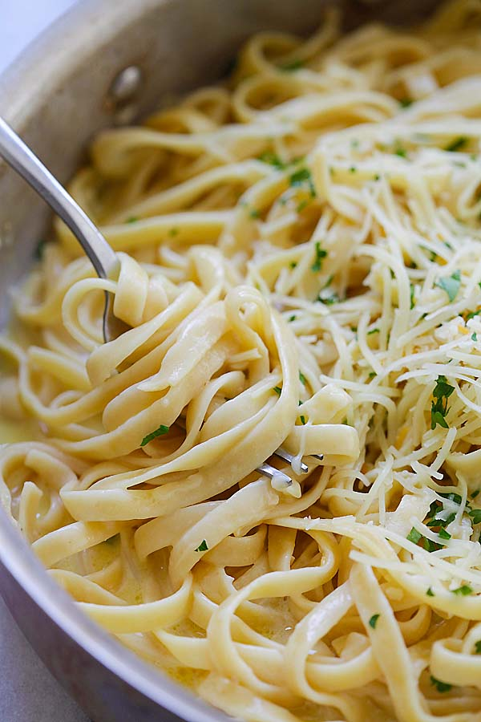

Creamy Garlic Parmesan Pasta

Description
This Creamy Garlic Parmesan Pasta is a delectable and comforting dish that will satisfy your taste buds. It combines the
falvors of garlic and Parmesan cheese with a creamy sauce, creating a delightful pasta experience.
Ingredients
- 8 ounces fettuccine pasta
- 2 tablespoons butter
- 4 cloves garlice, minced
- 1 cup heavy cream
- 1 cup grated Parmesan cheese
- Salt and pepper to taste
- Fresh parsley, chopped (for garnish)
Directions
- Cook the fettuccine pasta in a large pot of boiling salted water until al dente. Drain and set aside.
- In a separate large skillet, melt the butter over medium heat. Add the minced garlic and sauté for about 1 minute until fragrant.
- Reduce the heat to low and pour in the heavy cream. Let it simmer for a couple of minutes, stirring occasionally.
- Add the grated Parmesan cheese to the cream sauce, stirring continuously until the cheese is completely melted and the sauce becomes smooth and creamy.
- Season the sauce with salt and pepper to taste. Keep in mind that parmesan is already salty, so be cautious with the additional salt.
- Add the cooked fettuccine to the sauce and toss until the pasta is evenly coated
- Garnish with chopped fresh parsley for a pop of color and added flavor.
- Serve immediately and enjoy this delightful Creamy Garlic Parmesan Pasta!
Back to home
Back to top